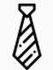
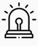
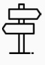

HOME > 지속가능경영 > 준법경영
준법경영

기업의 관련 법규 및 회사 내규를 준수합니다

compliance
-
- 기업의 투명성
- 안정적이고 지속가능한
회사가치의 증가
-
- 임직원 충성도
- 믿을 수 있는 근무 환경
공정하고 투명한 업무
-
- 지속가능성장
- 공정하고 객관적인
시스템 경영
-
- 고객기반 강화
- 상품, 서비스를 수용하는
고객의 신뢰 증대
CGV 공정거래 자율준수 프로그램
체크이모티콘
경제주체인 기업들이 경제활동을 하는데 있어 경쟁질서를 확립
체크이모티콘공정거래 관련 법규를 스스로 준수하기 위하여 자체적으로 제정,
운영하는 교육, 감독 등의 '내부준법시스템'
기업의 지속적인 성장을 위한 핵심 요소
-
- 자율준수관리자의 임명
-
이사회 등 최고 의사결정기구는
조직 내 자율준수관리자를
임명하고 효과적인 CP 운영에
대한 책임을 부여
-

- CEO의 자율준수 의지
-
최고 경영자는 자율준수의지를
공개적으로 표명,
CP운영을 적극적 지원
-
- 자율준수편람 제작 및 활용
-
공정거래 관련 법규 및 CP의
기준과 절차를 포함하여 임직원이
쉽게 접근하여 활용 가능
-

- 내부감시체계 구축
-
위업행위의 예방을 위해
합리적으로 계획된 감사시스템을
구축하고 운용해야 하며,
감사결과는 주기적으로 이사회 등
최고의사결정기구에 보고
-

- CP 정립 및 시행
-
소속 임직원들이 엄부와 관련된
공정거래 관련 법규 준수 사항을
명확히 인지해 이를 실천 할 수
있도록 기준과 절차를 마련하고 시행
-
- 자율준수교육 실시
-
CP기준과 절차 및 공정거래 법규
준수사항 등에 대해 최고경영자를
포함한 임직원을 대상으로
효과적인 교육을 정기적으로 실시